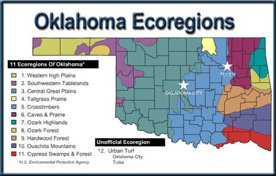

Oklahoma Entomology
Draft compiled
by Mike Quinn
Note, some links are Texas-centric
|
|
Oklahoma offers the nation’s most diverse terrain. It’s one of only four states with more than 10 ecoregions, and has by far, the most per mile in America.

Oklahoma Office of the Secretary of Environment